IEEE Magnetics Society Summer School 2027
Espoo, Finland·June 13–18, 2027
Dear Students,
The 2027 IEEE Magnetics Society Summer School will take place at Aalto University, Espoo, Finland, on the Otaniemi campus, 15 minutes by metro from downtown Helsinki.
The campus, planned and partly designed by Alvar Aalto, is a landmark of Nordic modernist architecture set among pines by the sea. Helsinki, with Suomenlinna, its archipelago and the near-continuous daylight of the northern summer, is at its best in June. An archipelago boat tour with dinner on Seurasaari and a seashore sauna evening will make it an unforgettable magnetics summer school experience.
Apply now and, if selected, you will attend lectures on the fundamentals and applications of magnetism, with tutorials and poster sessions.
Looking forward to seeing you in Espoo!
Apply by [2027, date to be announced]
Applications are submitted through the IEEE Magnetics Society website and include an advisor letter of endorsement. Free room and board and travel support for selected students.Organizing Committee: Sebastiaan van Dijken (chair), Jose Lado, Peter Liljeroth, Maarit Karppinen, Lukáš Flajšman (Aalto University); Tero Heikkilä, Shawulienu Kezilebieke (University of Jyväskylä)
The host
Magnetism at Aalto University
Aalto University unites technology, business, and the arts on a campus that is itself a landmark of Nordic modernist architecture. It was formed in 2010 through the merger of the Helsinki University of Technology, the Helsinki School of Economics, and the University of Art and Design Helsinki.
Aalto hosts research groups spanning the breadth of modern magnetism, from quantum magnetic phenomena to applied spintronic and magnonic devices. Together they cover synthesis, characterization, device fabrication, and theory:
- Spin-wave dynamics & magnonics
- Magneto-ionic control of magnetism
- Hybrid & quantum magnonics
- Magnetic van der Waals materials
- Low-temperature STM/AFM
- Quantum magnetism & topological phases
- ALD/MLD of magnetic oxides
- Magnet/superconductor heterostructures
Lectures on the fundamentals and applications of magnetism will be given by invited international lecturers. [Lecturer list to be announced]
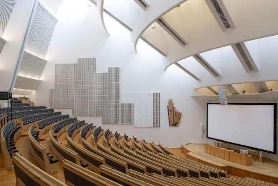
Sunday 13 – Friday 18 June 2027
Programme
Four full days of lectures, tutorials, and poster sessions, with a half-day archipelago excursion on Wednesday and a seashore sauna evening on Thursday. Preliminary timetable:
| Time | Sun13 June | Mon14 June | Tue15 June | Wed16 June | Thu17 June | Fri18 June |
|---|---|---|---|---|---|---|
| 8:00–9:00 | Arrival | Breakfast | Breakfast | Breakfast | Breakfast | Breakfast |
| 9:00–10:30 | Lecture | Lecture | Lecture | Lecture | Lecture | |
| 10:30–11:00 | Coffee | Coffee | Coffee | Coffee | Coffee | |
| 11:00–12:30 | Lecture | Lecture | Lecture | Lecture | Lecture | |
| 12:30–13:30 | Lunch | Lunch | Lunch | Lunch | Lunch | |
| 13:30–15:00 | Lecture | Lecture | Helsinki archipelago boat tour Dinner on Seurasaari | Lecture | Departure | |
| 15:00–15:30 | Coffee | Coffee | Coffee | |||
| 15:30–17:00 | Lecture | Lecture | Lecture | |||
| 17:00–18:30 | Welcome reception | Posters | Posters | Posters | ||
| Evening | Dinner | Dinner | Dinner + sauna |
Breakfast at the hotel. Lunch, coffee breaks and the Monday and Tuesday dinners are served in Maarintie 8. Session titles and lecturers will be added once confirmed.
Facilities, housing and meals
Venue & accommodation
Lectures in Maarintie 8
Lectures take place in Maarintie 8, home to several units of the Aalto School of Science. The lecture hall seats up to 300 people, and its adjoining lobby hosts the coffee breaks, quiet work between sessions, and the poster sessions. The same building houses a restaurant serving lunch and dinner.
Staying at Heymo 1
All students and lecturers stay at Heymo 1 on campus, 1.2 km from the lecture hall: 10 minutes by tram or under 20 minutes on foot. Breakfast is served at the hotel.
Meals
Selected students receive full room and board: daily lunch and coffee breaks, dinner on campus on Monday and Tuesday, dinner at Seurasaari on Wednesday, dinner at the sauna evening on Thursday, and a welcome reception with food and drinks on Sunday.
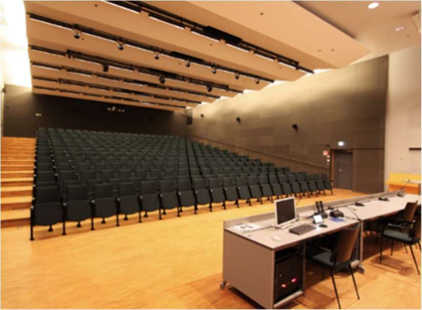
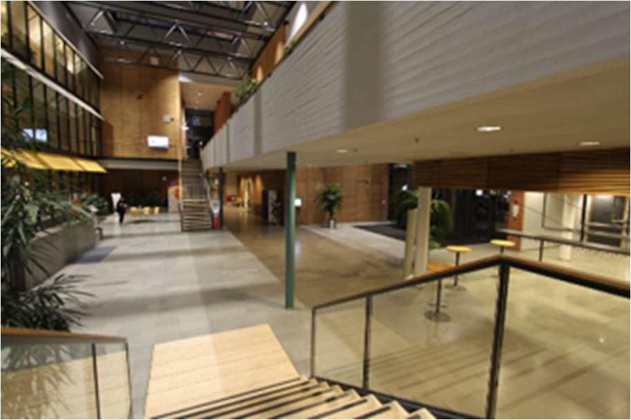
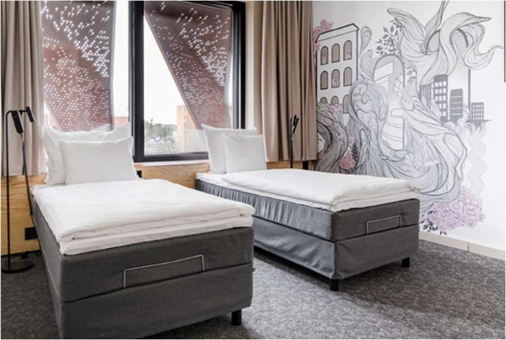
Accessibility
Getting here
The campus is in Otaniemi, Espoo, about 10 km from central Helsinki. The metro from downtown Helsinki to Aalto University station takes 15 minutes, and buses and the Jokeri tram also serve the campus.
By air. Helsinki Airport (HEL) has direct flights to most major European cities and to destinations in East Asia and the United States. Public transport from the airport to campus takes about one hour.
Tickets. Pay by contactless card on boarding, or buy tickets in the HSL app. Use zone AB for Helsinki and Espoo, ABC from the airport.
By bike. City bikes are available across Helsinki and Espoo, with passes in the HSL app. Espoo has nearly 600 km of cycle paths.
Helsinki in June. Senate Square, the UNESCO World Heritage fortress of Suomenlinna, island ferries, public saunas, seaside pools, and outdoor cafés. English is widely spoken.
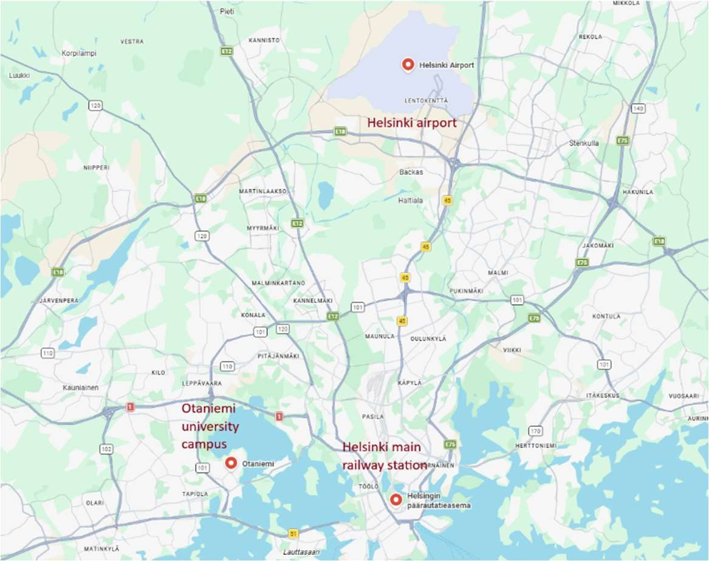
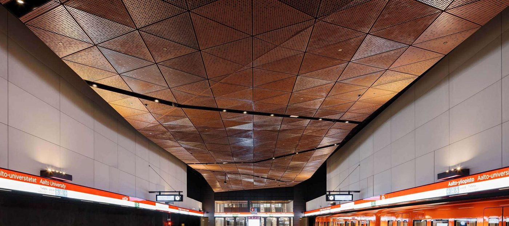
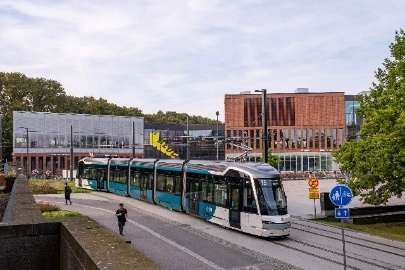
People
Local organizing committee
Graduate students in magnetism
Apply
Who can apply
PhD students working in magnetism and related fields. About 90 students from Asia, Europe, the Americas, and elsewhere will be selected.
What you need
An application through the IEEE Magnetics Society, including an advisor letter of endorsement. Deadline [2027, date to be announced].
What you get
Free accommodation and meals for the whole week, and travel support toward your flight.
Questions: [contact e-mail]
Excursion and cultural activities
Archipelago, Seurasaari and sauna
Wednesday: boat tour and dinner on Seurasaari
After lunch on Wednesday a boat takes the school through the islands surrounding Espoo and Helsinki, with views over the Baltic Sea. The tour ends at the museum island of Seurasaari, whose open-air museum gathers more than 30 historic wooden buildings from all over Finland. Explore the island on your own or visit the museum buildings, then join dinner of Finnish summer fare at the Seurasaari festivity house, a historic wooden villa with a seaside terrace.
Thursday: seashore sauna evening
Thursday ends at the AYY shore sauna on campus, run by the Aalto student union. The sauna fits up to 40 people at once, and there is a hot tub and plenty of outdoor space for food, drinks, a swim in the sea, and the midnight sun.
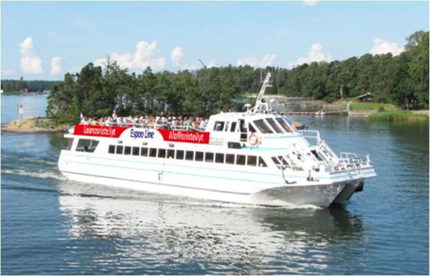
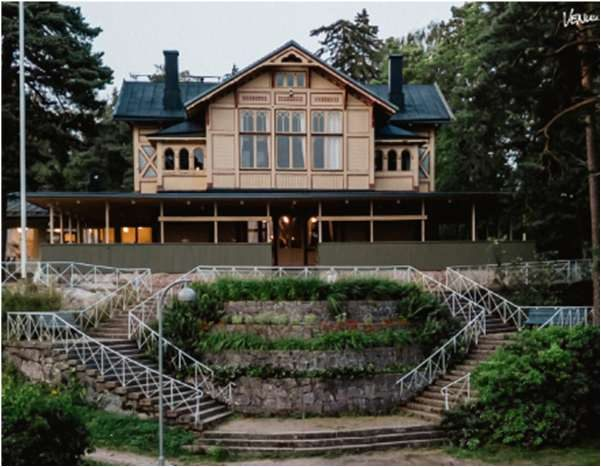
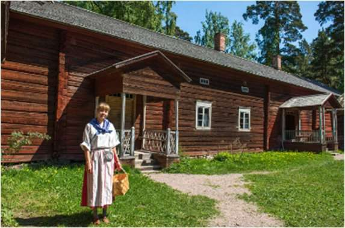
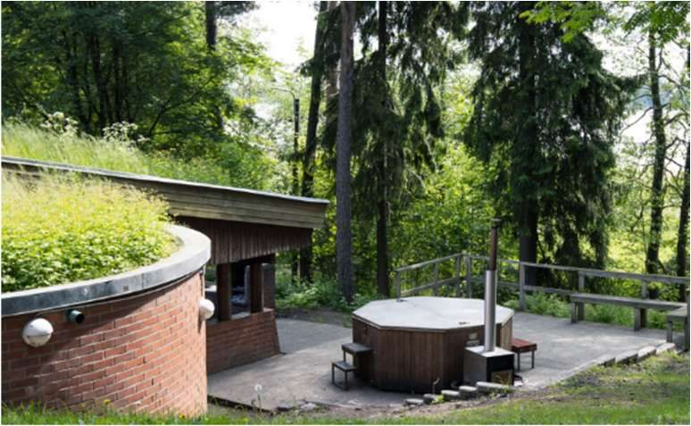